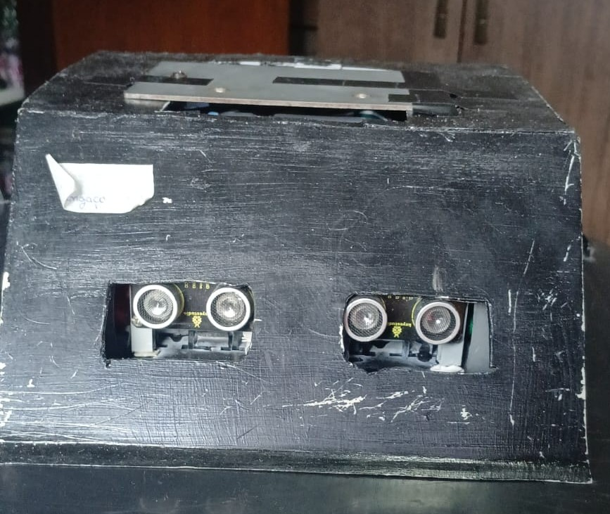
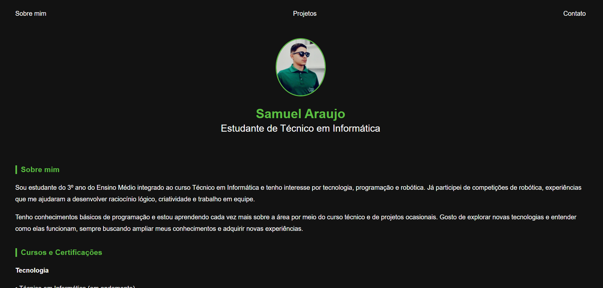

🤖 Robô de Sumô Autônomo

Projeto desenvolvido durante atividades de robótica educacional, com foco na construção e programação de um robô autônomo para competições de sumô. O desenvolvimento envolveu a utilização de Arduino, sensores, motores, componentes eletrônicos e sistemas de alimentação para controle de movimentação e tomada de decisões durante as disputas.
Durante o projeto foram aplicados conceitos de lógica de programação, eletrônica básica, montagem de circuitos, integração entre hardware e software, interpretação de esquemas elétricos e trabalho em equipe para resolução de desafios práticos.
🔧 Desenvolvimento do Projeto


O desenvolvimento do robô envolveu diversas etapas, desde a seleção dos componentes eletrônicos até a montagem da estrutura mecânica. Foram utilizados motores, baterias, resistores, sensores e módulos de controle integrados ao sistema de programação embarcada.
A estrutura mecânica foi projetada para acomodar os motores, baterias, sensores e demais componentes eletrônicos, garantindo equilíbrio, resistência e facilidade de manutenção. Durante a montagem foram realizados testes e ajustes estruturais para melhorar o desempenho do robô durante as competições de sumô.
💻 Programação e Simulação com Tinkercad

Utilização da plataforma Tinkercad para criação, simulação e validação de circuitos eletrônicos em ambiente virtual, permitindo testar projetos antes da montagem física e reduzir possíveis erros de implementação.
Durante as simulações foram desenvolvidos algoritmos em C++ para controle de sensores, LEDs, displays LCD e outros componentes, fortalecendo o aprendizado em lógica de programação e desenvolvimento de sistemas eletrônicos.
🎨 Artes Digitais e Pixel Art
Produção de artes digitais durante atividades de design gráfico, utilizando técnicas de pixel art, vetorização e edição de imagens para criação de conteúdos visuais criativos e organizados.
Os projetos permitiram desenvolver habilidades relacionadas à composição visual, escolha de cores, organização gráfica e utilização de ferramentas digitais voltadas para design e comunicação visual.
🌐 Desenvolvimento Web e Portfólio Pessoal

Desenvolvimento de páginas web utilizando HTML, CSS e JavaScript, aplicando conceitos de estruturação de conteúdo, estilização de interfaces e criação de layouts responsivos para diferentes dispositivos.
Este portfólio reúne projetos e experiências desenvolvidos ao longo da formação no curso Técnico em Informática, servindo como uma demonstração prática dos conhecimentos adquiridos nas áreas de programação, robótica, design digital e desenvolvimento web.